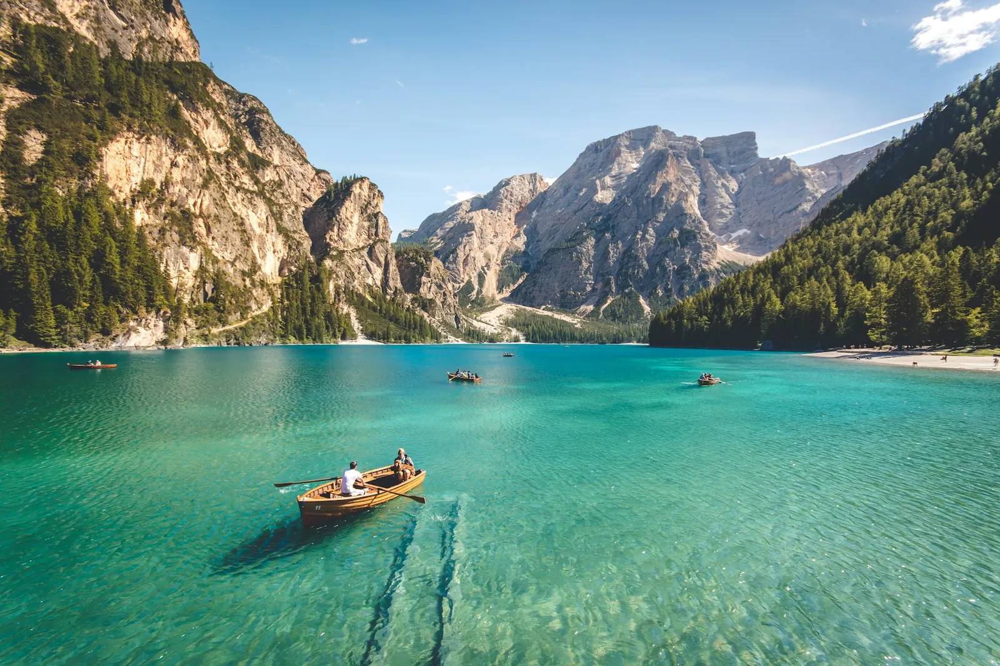
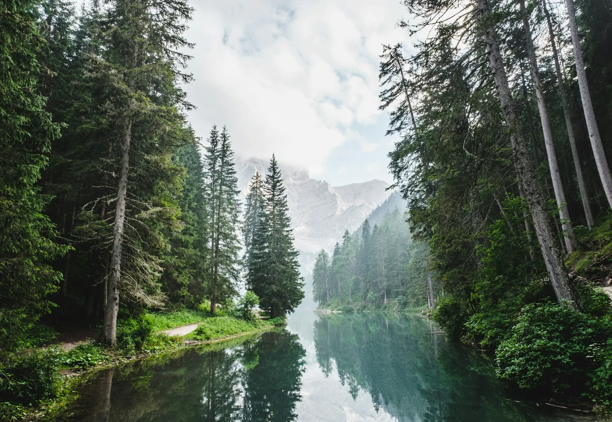

CONECTANDO TÉCNICA E NATUREZA
O FUTURO
COMEÇA NO TERRITÓRIO.
Inteligência ambiental para compreender lugares, orientar decisões e construir caminhos mais responsáveis.
ENTENDER. PLANEJAR. TRANSFORMAR.
Toda grande decisão começa com um olhar mais profundo.
Projetos ambientais exigem equilíbrio entre responsabilidade, planejamento e viabilidade. É nesse encontro que a engenharia faz diferença.
Uma abordagem que traduz demandas técnicas em processos compreensíveis, com atenção às particularidades de cada território.

O DESENVOLVIMENTO
PRECISA DE VISÃO.
Olhar para o território é enxergar possibilidades, responsabilidades e o impacto das escolhas feitas hoje.
Cada paisagem conta uma história. Nós começamos ouvindo.
Uma galeria visual ilustrativa de diferentes paisagens e contextos ambientais.

“O melhor projeto começa entendendo onde ele está.”
FOTOGRAFIAS ILUSTRATIVAS • NÃO REPRESENTAM PROJETOS EXECUTADOS PELA EMPRESA
SOLUÇÕES QUE FAZEM SENTIDO.
Do diagnóstico à regularização, uma base técnica para decisões ambientais mais conscientes.
Licenciamento Ambiental
Orientação e acompanhamento técnico em processos de licenciamento.
↗ 02Outorga de Água
Apoio à regularização do uso de recursos hídricos.
↗ 03Laudos Técnicos
Análises, documentação e suporte técnico especializado.
↗ 04CAR e CTF
Cadastros, orientações e acompanhamento de regularizações ambientais.
↗ 05Projetos Ambientais
Estudos e soluções técnicas ajustadas ao contexto de cada demanda.
↗TÉCNICA PARA O PRESENTE. VISÃO PARA O AMANHÃ.
VAMOS CONVERSARSEU PROJETO
COMEÇA COM UMA IDEIA.
Descreva sua necessidade e veja como a solicitação de contato pode funcionar na versão final do site.
CONCEITO DEMONSTRATIVO / SEM ENVIO DE DADOS